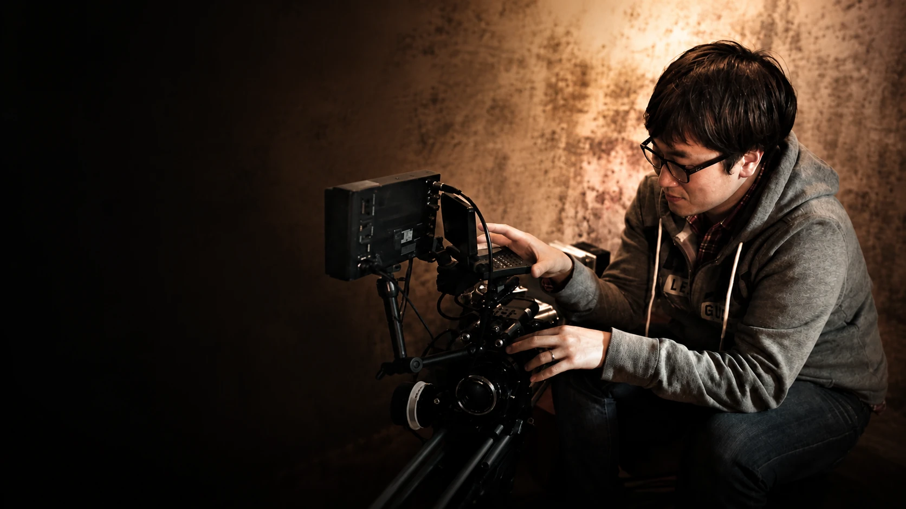
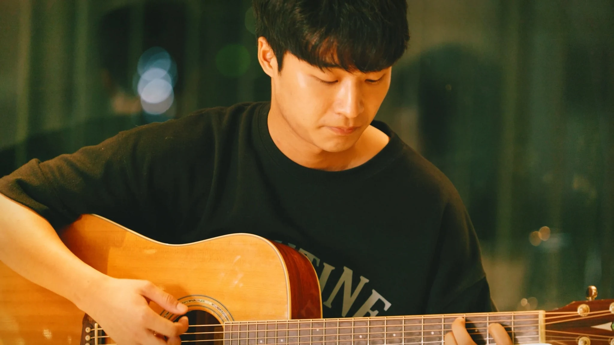
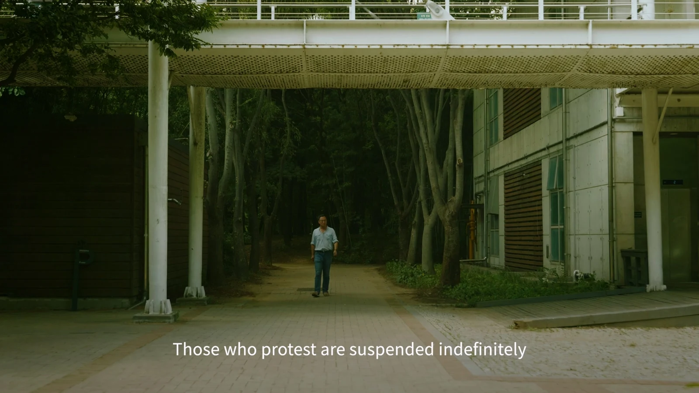
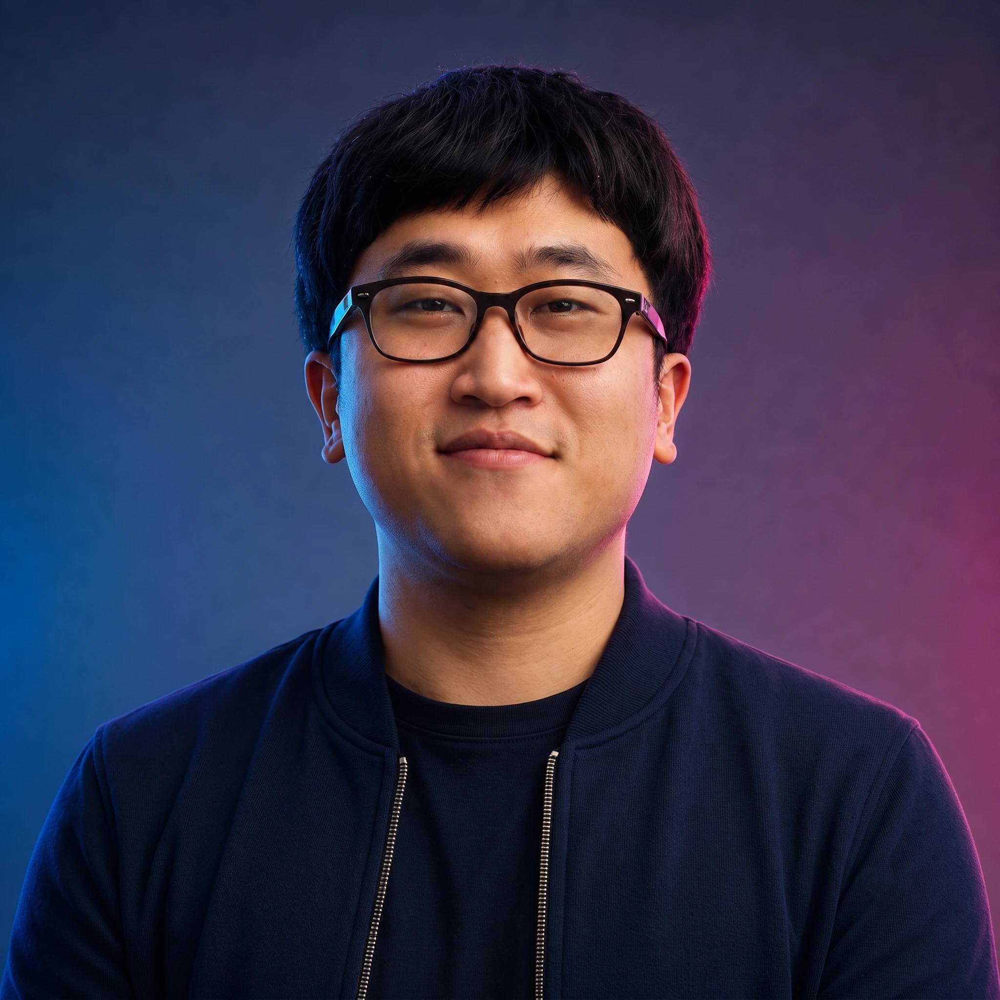

데이터로 주제를 고릅니다.
같은 분야에서 실제로 조회수가 나온 영상과 채널을 분석해,
시청자가 이미 찾고 있는 주제부터 정합니다.
의사 · 변호사 · 세무사 같은 전문직 유튜브와 학교 · 기업 · 호텔 홍보영상을 만드는 1인 영상 스튜디오입니다.
영화과 출신 디렉터가 유튜브 기획부터 촬영 현장, 마지막 색까지 직접 봅니다. 서울 · 경기 · 인천 방문 촬영.

▶ 쇼릴 재생함께한 곳 — 백석문화대학교 · 한국기술교육대학교 · 장안대학교 · 병원 및 요양병원

4 + 8
한 번 촬영하면 롱폼 4편, 숏폼 8편.
스튜디오 촬영을 병원 현장 촬영으로 바꾸고,
카메라 2대와 프롬프터를 세팅해
한 번의 촬영에서 롱폼 4편과 숏폼 8편이 나오도록 했습니다.
잘 찍은 영상도 아무도 보지 않으면 소용없습니다.
촬영 전에 무엇을, 어떤 순서로, 누구에게 보여줄지부터
함께 정합니다.
직접 유튜브 채널도 운영합니다.
같은 분야에서 실제로 조회수가 나온 영상과 채널을 분석해,
시청자가 이미 찾고 있는 주제부터 정합니다.
촬영 전에 제목 · 썸네일 문구와 첫 장면을 정하고,
영상이 그 약속을 끝까지 채우도록 원고를 구성합니다.

백석문화대학교 미디어영상학부.
학과의 분위기와 전공의 매력을 예비 신입생에게 보여줍니다.

객실과 공간의 분위기를 영상으로 소개합니다.
드론과 조명으로 공간의 첫인상을 만듭니다.

한국기술교육대학교 축제.
무대의 공연과 객석의 반응을 함께 기록했습니다.

어쿠스틱 퍼포먼스의 감정과 리듬을 화면으로 옮겼습니다.

인물과 현장의 시간을 오래 관찰하고 기록했습니다.

오세영 · 디렉터.
서울예술대학교 영화과에서 촬영을 전공하고,
영화와 TV CF 촬영팀에서 일했습니다.
16mm 필름 단편부터 독립 장편까지 촬영해 온 시선으로
기업과 기관의 영상을 만듭니다.
장비 — Sony FX3 · A7M5 · DJI 드론 · 난라이트 조명
상담 → 기획 → 촬영 → 편집 · 색보정 → 납품.
정확한 견적은 용도와 일정에 맞춰 드립니다.
숏폼은 촬영 후 2~4일, 홍보영상은 촬영 후 1~2주 정도 걸립니다.
기본 2회 무상 수정이 포함됩니다. 작업자 실수로 인한 수정은 횟수와 상관없이 무상입니다.
경기 시흥을 기반으로 서울, 경기, 인천 어디든 방문합니다. 그 외 지역은 협의 후 진행합니다.
고화질 MP4로 납품하며, 요청 시 세로형 숏폼 버전도 함께 제작합니다.
상업용 유료 음원과 소스만 사용하며, 완성된 영상은 자유롭게 활용하실 수 있습니다.
가장 효율적인 제작 방식부터 함께 정리하겠습니다.
경기 시흥에서 출발해 서울 · 경기 · 인천 어디든 촬영하러 갑니다.
문의 내용을 작성한 뒤 카카오톡 채팅에 붙여넣거나 이메일로 보내주세요.